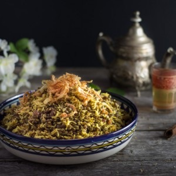

Mejadra

Dans ma cuisine aujourd’hui je vous parle de la recette du mejadra. Il s’agit comme le titre l’indique d’un plat de riz et de lentilles dont je ne me lasse pas.
Si on m’avait dit un jour « hé toi prépares moi du riz et des lentilles stp » je pense que j’aurai répondu « be tu sais quoi la casserole est juste ici et moi je ne mange pas ici »! Non mais c’est vrai quoi du riz et des lentilles ce n’est pas vraiment le plat qui donne super envie^^. Pourtant depuis que je connais le mejadra j’en suis une vraie fan. Ce plat nous vient tout droit du Moyen-Orient et c’est là bas que j’ai eu l’occasion d’en gouter pour la première fois pendant notre voyage à Jérusalem. Le mejadra, aussi appelé mujaddara existe depuis le 13ème siècle. La version du mejadra avec de la viande était consommée par les gens aisés alors que celle-ci était consommée par les pauvres. Il existe d’ailleurs un dicton dans le monde arabe qui dit « qu’un homme affamé serait prêt à vendre son âme pour un plat de mejadra » (je ne sais pas si j’en suis à ce stade mais quand même il faut dire que c’est terriblement bon). Ce que j’adore aussi et qui apporte vraiment le petit truc en plus ce sont les oignons frits sur le dessus (vous pouvez d’ailleurs en trouver également dans mon burger Oriental ICI ). C’est d’ailleurs l’étape la plus pénible de la recette car je n’aime pas trop faire de friture à la maison, mais finalement je ne regrette jamais de les avoir préparés.
Comme vous pouvez le voir dernièrement je suis beaucoup dans ma période « noire » en ce qui concerne les photos. Ce n’est pas que je n’ai pas le moral (quoique le retour de vacances…) mais il faut dire que mon chéri est super fan de ce type de photo alors je m’amuse et je fais des tests de temps en temps!! J’espère qu’à vous aussi elles vous plaisent!!
Je vous laisse maintenant avec la recette du mejadra et même si c’est un plat de riz et de lentilles j’espère qu’il vous surprendra autant qu’à moi!!
Ingrédients
- Lentilles vertes - 250g
- Riz basmati - 200g
- Huile d'olive - 2 càs
- Cumin - 2 càc + 1/2 càc
- Curcuma - 1 càc
- Canelle - 2càc
- Coriandre - 2 càc
- Quatre épices - 2 càc
- Sel poivre
- Oignons - 4
- Farine - environ 3 càs
- Huile de friture
- Sucre - 1 càc
- Eau - 350ml
Instructions
- Versez les lentilles dans un grand volume d'eau salée
- Portez à ébullition et laissez cuire pendant 15 minutes
- Égouttez et laissez de côté
- Épluchez et émincez les oignons en lamelles
- Versez-les dans un saladier et saupoudrez-les de farine et d'1 càs de sel
- Mélangez les bien pour qu'ils soient bien enrobés de farine
- Faites chauffer l'huile
- Une fois que l'huile est chaude, baissez un peu le feu et faites frire les oignons Moi je le fais en trois fois car mon plat n'est pas assez grand
- Faites frire jusqu'à ce que l'oignon prenne une jolie couleur dorée
- A l'aide d'un écumoire sortez-les et transférez-les sur une assiette avec du papier absorbant
- Dans une casserole, sur feu moyen, versez l'huile d'olive
- Ajoutez le riz basmati
- Remuer jusqu'à ce qu'il devienne translucide (env 1 min)
- Ajoutez les épices, le sucre, une pincée de sel et du poivre
- Mélanger pour enrober le riz
- Ajoutez les lentilles
- Verser 350 ml d'eau
- Portez à ébullition, baissez le feu et couvrez
- Laissez cuire pendant 15 minutes
- Intégrez la moitié des oignons frits au mélange riz-lentilles
- Mélangez doucement
- Versez dans un plat et garnissez du reste d'oignons frits
Les tips de la communauté
Recette de riz et lentilles épicée très appréciée après testing. Plusieurs commentaires positifs de lecteurs qui ont adoré. Association riz-lentilles initialement sceptique mais révélée délicieuse. Plat complet et équilibré en protéines végétales. Nombreux retours de succès culinaire.
Astuces
- Plat équilibré en acides aminés grâce au duo riz-lentilles (idéal pour végétariens)
- Oignons frits essentiels pour la saveur
- Recette à préparer à l'avance possible et réchauffable
- Accompagner d'une salade tomates-concombre avec oignons frais, menthe et persil
Variantes suggérées
- Ajouter une cuillerée à café de curry pour plus de chaleur
- Lentilles blondes peuvent remplacer les lentilles vertes
Ajustements signalés
- Respecter les quantités d'eau - ne pas augmenter la cuisson même si le riz semble cru (il cuit avec la chaleur résiduelle)